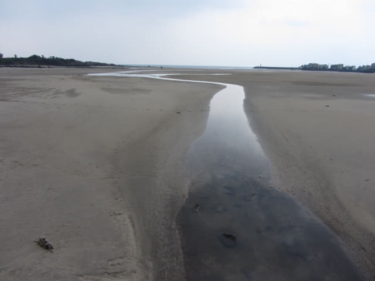
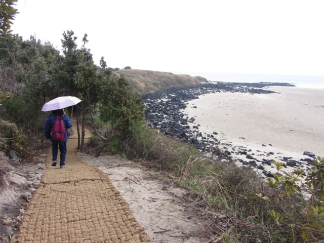

吃完美味豬雜湯飯午餐, 約下午二時, 看見沒有下雨, 便決定沿偶來3號小路步行往新川里壁畫村 (신천리벽화마을)。看看地圖, 新川里壁画村離這裡好像不太遠, 沿海邊一直走便是, 估計步行約兩個半鐘頭至三小時。
本以為很簡單的行程, 最後竟然…….。
因我們一直以為跨過川尾川是一道橋樑, 所以認定是抵達新川里壁畫村前的最重要路標, 而新川里壁畫村在海濱那邊入口又沒有標示, 「傻更更」一直走, 經過了也不知, 還繼續一直走……, 走到了離新川里壁畫村很遠的地方, 最後到了一個非常難走的石灘路, 發覺勢色不對, 恐怕隨時在天黑來臨時被困海邊, 便決定放棄往新川里壁畫村, 匆匆掉頭回程。
掉頭回程, 走了一會, 發覺如果循原路走, 路途頗為遙遠, 可能天黑前也不能抵達表善海灘海邊, 隨時被困荒野, 便決定沿途找路往高速公路, 乘車返回表善市區。沿途很多道路都不像通往高速公路的, 最主要是沒有路標, 心想如果是通往高速公路, 應該有路標的。
最後來到一個比較寬闊的道路, 在沒有選擇下, 便戰戰兢兢的沿馬路走進村莊, 希望可以往高速公路, 如果不可以, 起碼可以向村民求助。走了一會, 發覺沿途很多房屋的外牆都繪了很漂亮的壁畫, 開始懷疑莫非這裡便是新川里壁畫村…….。
以下是我們實際的步行路線圖, 在石灘路才掉頭回程。
離開餐廳, 沿馬路返回表善海灘海邊, 接著轉左循偶來3號小路走。
又看到一群人在沙灘上騎馬。
表善海灘真是很大, 好像沙漠一樣。

沿沙灘旁的馬路走了約十分鐘, 來到奧林匹克花園 (올림픽동산), 右邊有幾級石階。按偶來標誌所示, 在這裡轉右走下沙灘。
走下沙灘不久便下起大雨來, 嘩啦嘩啦的倒下來。已經來到這裡, 沒理由退縮吧, 唯有繼續前進。旅行遇上這些天氣, 真是無奈。
沿沙灘走, 穿過一個好像是騎馬訓練中心, 很多學員騎在馬上等候輪流出發。真佩服他們, 下那麼大雨還騎馬。
接著是一段石灘路,
鞋子和褲子都濕透。
鹽膜沙灘 (소금막해변)
接著走上山坡, 沿崖邊步道走, 右邊山坡下便是沙灘是鹽膜沙灘。幸好這段山路鋪設了好像用粗麻繩編織的地毯, 除了防滑外, 麻繩間的縫隙還可以避免積水, 偶來小路真是貼心, 很完善。


喂~~~ 在這裡轉左走。
拐個彎, 慢慢走下山坡, 已經離開了鹽膜沙灘, 從這裡開始, 沿岸都是黑漆漆的岩石, 而長長的粗麻繩地毯也到此為止了。
接著走出了小徑, 來到一條馬路。接著沿馬路旁的步道走。

{kind=link}